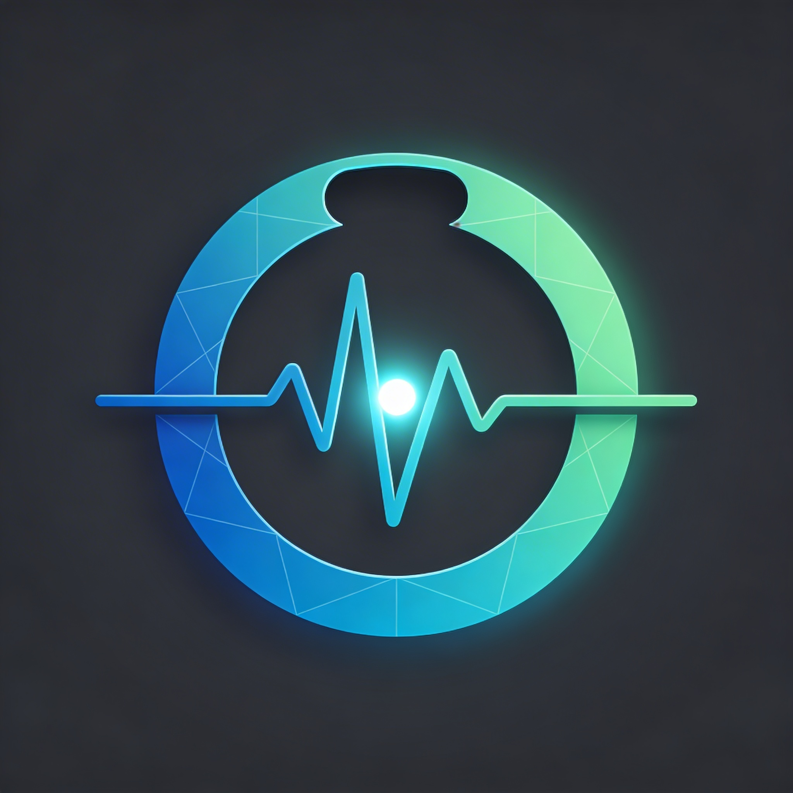

L'avenir de votre santé connectée. Analyse prédictive, journal intelligent et score vital en temps réel.
Algorithme propriétaire qui calcule votre score de santé global en temps réel à partir de vos données vitales.
Analyse intelligente de vos symptômes avec suggestions personnalisées. IA locale 100% confidentielle.
Journal d'habitudes ultra-rapide qui détecte automatiquement vos patterns de santé.
Projet personnel démontrant une architecture full-stack moderne, intégration IA avancée, design biomédical soigné et expérience utilisateur premium santé.